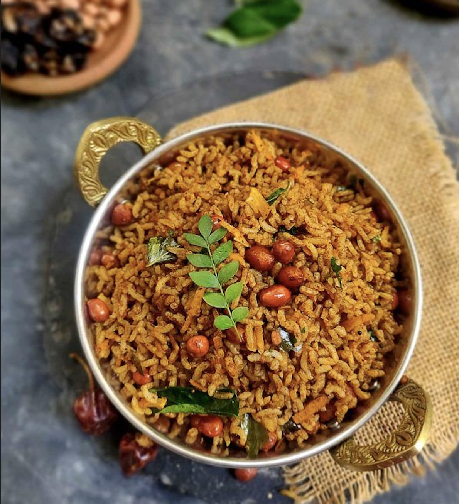
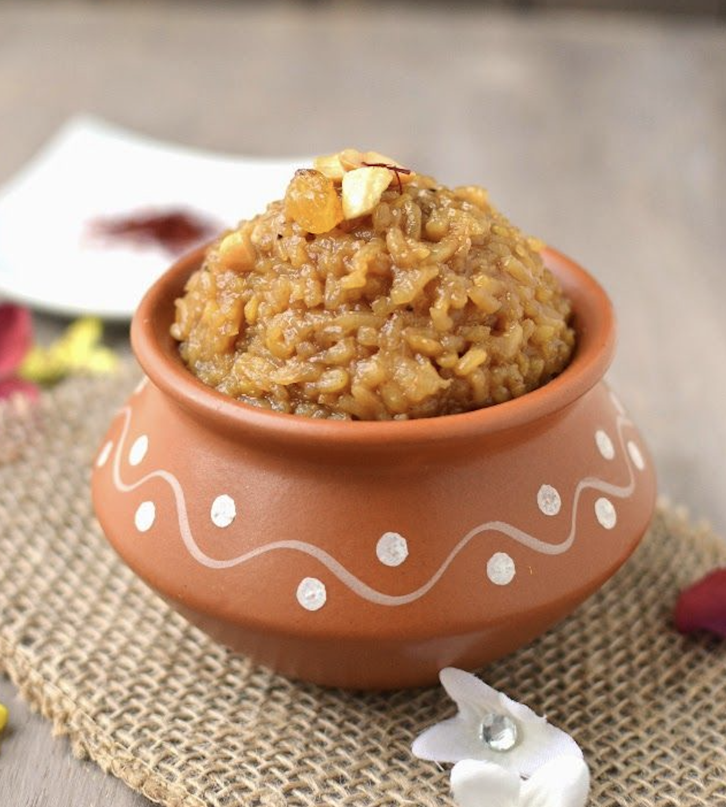
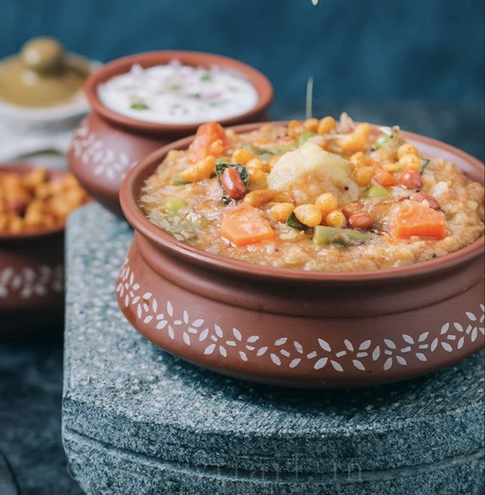

Experience the divine taste of traditional Iyengar delicacies prepared with decades of expertise. From temple prasadam to family celebrations, we bring the essence of authentic South Indian flavors to your plate.

Puliyogare
Sakkare Pongal
BisibelebathPreserving the sacred art of Iyengar culinary traditions
At House of Iyengar, we are custodians of an ancient culinary heritage. With over two decades of experience in preparing traditional Iyengar cuisine, we have been the trusted choice for temples across the region, providing pure and authentic food for Pooja and Navaidyam.
Our recipes have been passed down through generations, each dish crafted with the same devotion and purity that our ancestors practiced. Every ingredient is carefully selected, every spice traditionally ground, and every dish prepared with prayers and love.
Bring the authentic taste of Iyengar cuisine to your kitchen
Our signature spice blend, stone-ground to perfection. Contains over 15 traditional spices for that authentic temple taste.
Ready-to-use tamarind paste with our secret spice mix. Just mix with rice and experience instant bliss.
Authentic Iyengar spice blends for various dishes. All made without onion and garlic, perfect for sattvic cooking.
From temple kitchens to your celebrations
We provide pure, traditional food for temple poojas, navaidyam, and special occasions. Trusted by temples across the region for decades.
Complete catering services for weddings, upanayanams, shraddhams, and all family celebrations with authentic Iyengar menu.
Custom preparation for griha pravesham, satyanarayan pooja, varalakshmi vratam, and other religious ceremonies.
Visit our stall at Channasandra for fresh, hot traditional dishes every day. Taste the difference of authentic cooking.
Trusted by families and temples alike
"The Puliyogare from House of Iyengar takes me back to my grandmother's kitchen. The authentic taste, the perfect balance of tangy and spicy - it's simply divine! We order for every family function."
"Their Sakkare Pongal is out of this world! The generous amount of ghee, perfectly cooked rice, and the aroma of cardamom - every bite is a festival. The hygiene standards are impeccable."
"We've been using their services for our temple's special poojas for years. The commitment to purity, the traditional preparation methods, and the devotion they put into every dish is remarkable."
"The Bisibelebath powder I bought has transformed my cooking! The authentic taste is unmatched. My kids now prefer my homemade bisibelebath over any restaurant. Thank you for keeping traditions alive!"
"Ordered catering for my son's upanayanam. The food quality was exceptional, delivery was on time, and the taste had all our guests asking for the contact. Truly committed to excellence!"
Everything you need to know about House of Iyengar
House of Iyengar is famous for authentic traditional Iyengar cuisine, especially Puliyogare (tamarind rice), Bisibelebath, and Sakkare Pongal (sweet pongal). With 25+ years of experience, we are trusted for temple food services and catering for weddings, poojas, and family functions in Bengaluru.
We are located at Channasandra, next to RNSIT (RNS Institute of Technology), Bengaluru, Karnataka. Our food stall is easily accessible and you can find us on Google Maps. Contact us at +91 99169 95522.
Our food stall operates in two shifts:
Morning: 7:00 AM to 11:00 AM
Evening: 4:00 PM to 8:00 PM
We are open all days of the week. For catering orders, please call us in advance.
Yes! We provide complete catering services for weddings, upanayanams, shraddhams, griha pravesham, satyanarayan pooja, varalakshmi vratam, and all family celebrations. Our food is prepared following traditional Iyengar recipes, making it perfect for religious ceremonies.
We sell homemade traditional products including:
• Bisibelebath Powder - Signature spice blend with 15+ traditional spices
• Puliyogare Gojju - Ready-to-use tamarind paste
• Traditional Spice Mixes - All made without onion and garlic, perfect for sattvic cooking
Absolutely! Our food is prepared following strict sattvic principles - 100% vegetarian, no onion, no garlic. We have been the trusted choice for temple food services across the region for decades, providing pure and authentic food for Pooja and Navaidyam.
You can order by:
• Calling us: +91 99169 95522
• Visiting our stall: Channasandra, near RNSIT, Bengaluru
• WhatsApp: Send us a message for quick response
For catering and bulk orders, please call in advance to discuss your requirements.
Iyengar Puliyogare is a traditional tamarind rice made with a special blend of roasted spices including sesame, peanuts, fenugreek, and curry leaves. Our secret family recipe uses freshly ground spices, making it perfectly tangy, spicy, and aromatic - a beloved temple prasadam that has been cherished for generations.
Visit our stall or call us for catering inquiries
Call: 99169 95522Visit our stall or get in touch
Channasandra, Next to RNSIT
Bengaluru, Karnataka
Morning: 7:00 AM - 11:00 AM
Evening: 4:00 PM - 8:00 PM
Call us for bulk orders and event catering